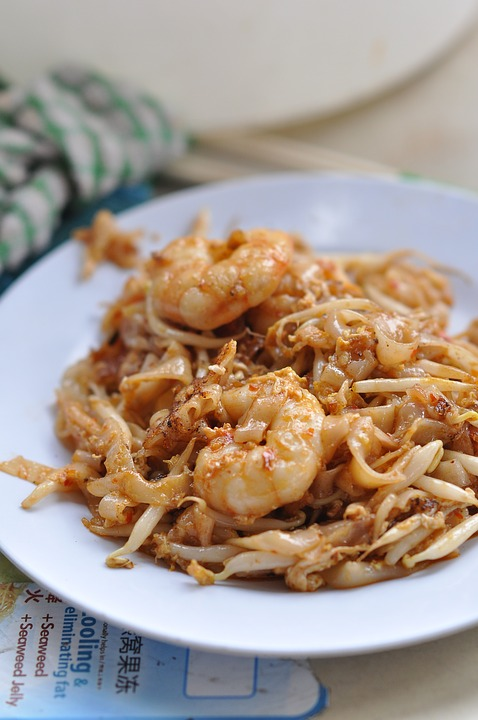
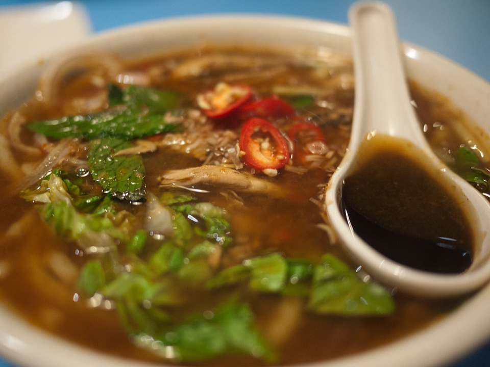

Foods in Penang
Malaysia is one of the country in the world that has various types of delicious foods due to different types of ethnics and cultures that coexist in Malaysia. Penang is one of the states in Malaysia that is full of delicious foods, especially in Georgetown. The foods in Penang is one of the attraction that attracts foreigners to Penang.
-
Char Koay Teow When most of the people think about foods in Penang, the first that comes to the mind is Char Koay Teow. Char Koay Teow is a natinal favaorite food in Malaysia. In Penang, different stalls has their own unique taste Char Koay Teow, with different spices and ingredients used.
-
Assam Laksa Assam Laksa is one of the signature dish of Penang. It is a spicy, sour, fish-based soup noodle broth of tamarind juice, chilli paste, lemongrass, topped with prawn paste, mackerel, sliced pineapple and mint. Its taste is guaranteed to be top-notch.